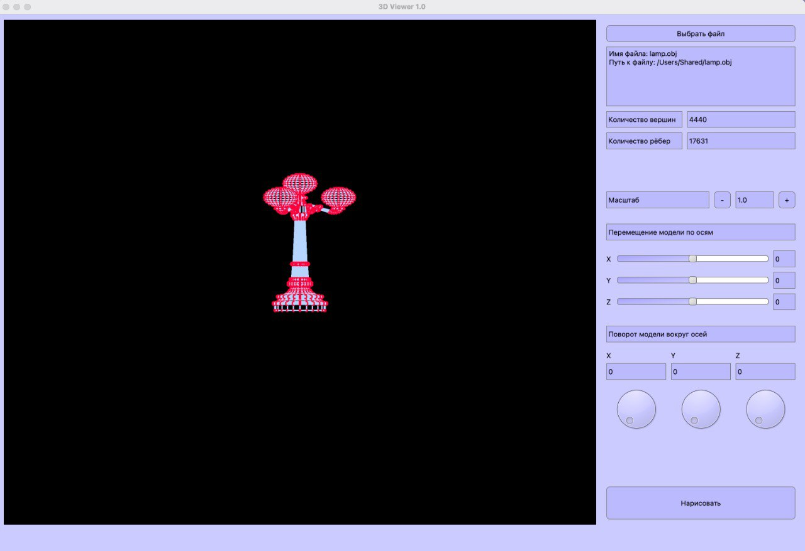

3DViewer 1.0

Назначение программы
Программа предназначена для визуализации файлов с расширением *.obj.
Возможности программы
Программа считывает и обрабатывает информацию по вершинам и рёбрам поврехностей
Реализованы возможности:
Ограничения программы
Программа реализована для операционных систем MacOS и Linux.
Для правильной работы программы исходный файл должен иметь расширение *.obj,
формат данных в файле должен соответствовать общепринятому стандарту.
Програма поддерживает также отрицательные ссылочные номера, если используются только они.
Смешанная запись положительных и отрицательных ссылочных номеров не допускается.
Программа не будет работать, если в файле встречаются вершины с менее чем 3 координатами,
если встречаются поверхности с менее чем 3 ссылками на вершины и в некоторых других случаях
неправильного или нетипичного формата содержимого файла.
Программа может не работать или работать неправильно в случае, если обрабатываемый файл
содержит более 1 000 000 вершин.
Разработчики
Учебный проект "Школы 21" от Сбер. Проект выполнен разработчиками denyoror, theodann и arupert.